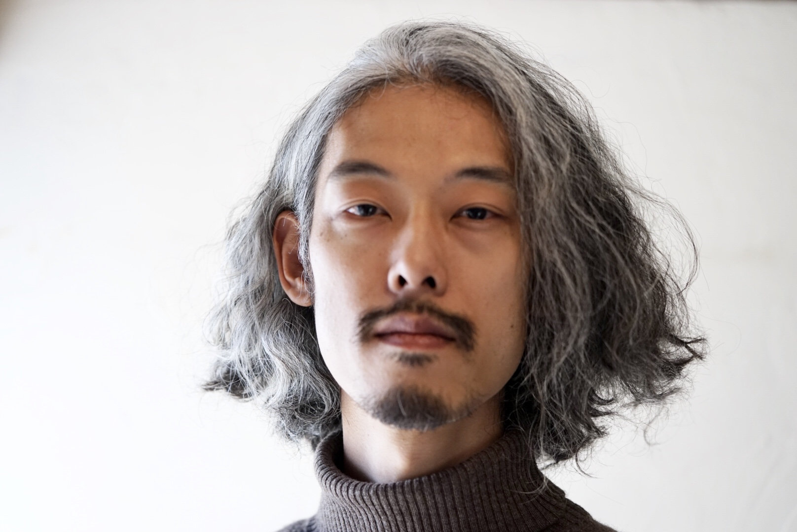

「本当の私」に還る、
真の癒しを
Product

2007年、27歳の時に突然ヒーリング能力に目覚めました。「現代医療では難しい」と言われた不調のお客様が、続けて改善されたことをきっかけに、ご紹介の輪が広がり、18年間活動を続けています。
現在は、遠隔ヒーリングとリモートカウンセリングを中心に活動しています。北海道から沖縄離島まで、全国にクライアントがいらっしゃいます。
ヒーリングでは、心身を整えるだけでなく、本来の自分を取り戻していくことを大切にしています。「変わりたいけれど変われない」「長年、同じ問題に悩んでいる」そんな方へ。
現在の状態やお悩みをお伺いし、不調の根本的な原因（頚椎2番）にアプローチします。
生活は普段通りで大丈夫です。体がリラックスしたタイミングで効果が発動します。ご希望の方には時間指定も可能です。より良いコンディションで受けるためのポイントは、アドバイスとFAQにまとめています。
施術後の状態の確認や、日常で気を付けるポイントなどのアドバイスをLINEにて丁寧に行います。
時々でもそっと動きをとめ、「こんなふうに体はいつも息をしているんだな」くらいの気持ちで呼吸を感じてみて下さい。それだけでヒーリングを受ける準備が整います。
しめつけの少ない服装がおすすめです。可能であれば、時計・アクセサリー・磁気ネックレス・ヘアピンなどの金属類は外しておくと、体の感覚を受け取りやすくなります。
体が安心してゆるんだタイミングで、自然に働き始めます。眠っている時や、ぼんやり休んでいる時に深く浸透することもあります。体感には個人差がありますので、無理に感じ取ろうとしなくて大丈夫です。
大丈夫です。ただ、「どこがつらいか」「いつ頃から気になっているか」などを事前に教えていただけると、状態を読み解く手がかりになります。言葉にしづらい場合は、そのままでも構いません。
一度で変化を感じる方もいますが、生活環境や心身の癖によって戻りやすさは変わります。頚椎2番は「一度クリアにして終わり」よりも、良い状態を保つための定期メンテナンスとして受けていただくのがおすすめです。
水分をとり、できる範囲でゆったりお過ごしください。眠気やだるさが出た時は、体が調整しているサインとして休める時間を優先していただければ十分です。